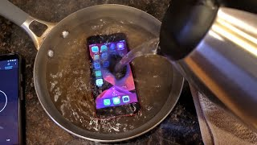
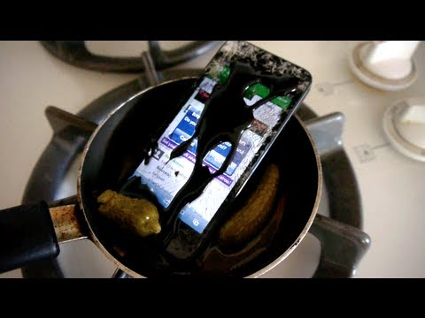

This is a recipe about how to make an iphone! Heres what the cooking process will look like!


Description
Now now, this may look like it loses you hundreds, if not thousands of dollars, your time, and any meaning in life you had up until this point, but I'm just here to say...
You're absolutely right! And it probably isn't even edible either! but hey, maybe it is and we just don't know it yet! Let's put it to the test!!!!
Ingredients:
- Iphone (Model 5 or above, below that and it takes to long to cook).
- A pot, big enough to hold whatever Iphone you have, and some water.
- And some water.
- Make sure you have water.
- Dont forget to pay your hydro bill.
- Confirm you have water before continuing.
- I know for a fact you didn't confirm your tap was expelling water effectively, you must check before you continue to anything else.
- Since I know for a fact you didn't check if you had water, I just gave you fake ingredients. The real ingredients can be accessed here, only once you are 100% sure you have water.
Steps:
- Make sure you have water.
- Grab an Iphone.
- Just kidding, if you read the actual instructions you already know that.
- Take out a pot of exactly 01010011(83) litres.
- Put the nearest newborn fork in the microwave until your house burns down
- You now have a delicous fork to eat!
- Before you continue with the steps above, make sure you have a pot and fork.
- Did you remember to pay your untentils bill? How about the pot bill? Go check right now.